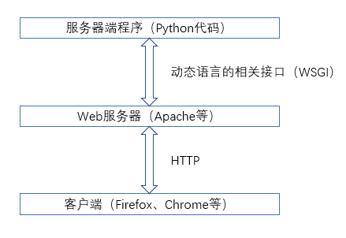

基于HTTP的网站开发
Web服务器仅起到桥梁的作用：
- 将浏览器的HTTP请求解码，转换成服务器端程序能够识别的接口调用方式；
- 将服务器端程序生成的返回封装成HTTP Response，返回给浏览器。 
Web服务器简介：
handles(解析)HTTP
当Web服务器接收到一个HTTP请求（request）时：
- 根据配置的内容：
- 返回一个静态的HTML页面；
- 或者调用某些代码动态生成返回结果。
Web服务器把dynamic reponse(动态响应)的产生delegate（委托）给其他一些程序。 例如：
- Python代码；
- JSP（JavaServer Pages脚本）；
- Servlets；
- ASP（Active Server Pages）脚本等。
无论它们的目的如何，这些server-side（服务器端）程序通常会产生一个response(HTTP响应)可以让浏览器浏览。
最简单的服务器端程序可以是直接读取某文件或返回固定的网页内容； 稍微复杂一点的服务器端程序需要处理客户端通过HTTP、URL、HTML中传入的参数、动态执行逻辑代码、在数据库或缓存中读写数据等一系列操作，才能最终生成调用结果。
主流Web服务器
- Apache：
- 用得最多，市场占有率约60%。
- 性能卓越，Tomcat或JBoss等其他Web服务器使用Apache为自己提供HTTP接口服务。
- Nginx：
- 轻量级、高性能的HTTP和反向代理服务器。
- 因稳定、功能集丰富、系统资源消耗低而闻名。
- IIS、Tomcat、JBoss等其他服务器。
可调用接口标准
接口-API-Application Program Interface
- WSGI：
- 专为Python语言制定的网络服务器标准接口。
- CGI、ISAPI等其他接口。